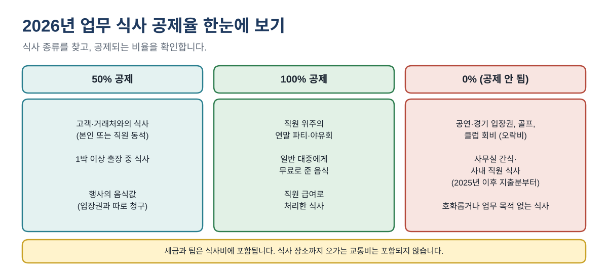
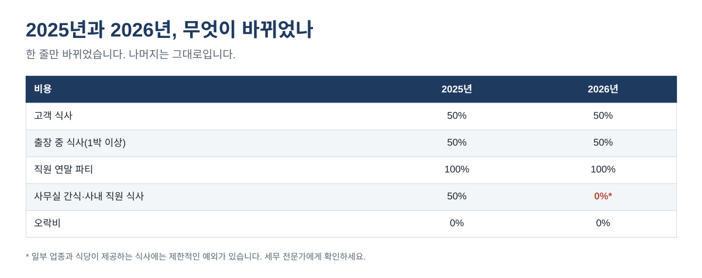
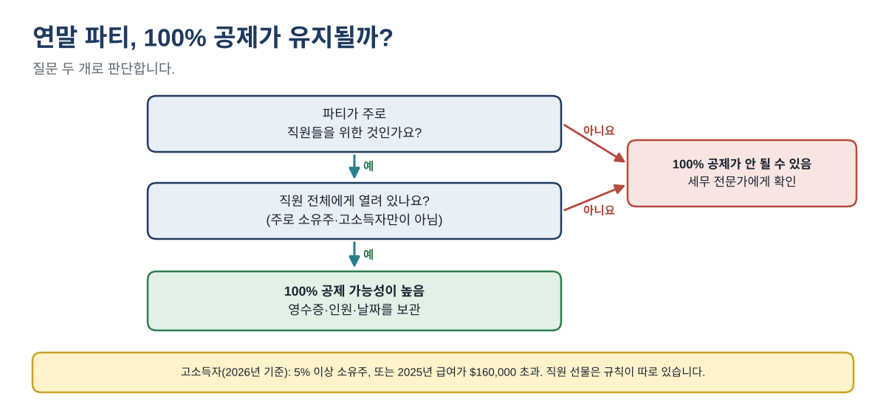

2026년 업무 식사·연말 파티 경비, 50%·100%·0% 중 몇 %가 공제될까
카드 명세서에서는 고객 점심, 직원 간식 도넛, 12월 회식이 모두 "식사비"로 보입니다. 하지만 세금에서는 셋이 다릅니다. 하나는 50% 공제, 하나는 이제 0%, 하나는 100%까지 공제될 수 있습니다.
2026년에는 변화가 하나 있습니다. 회사가 사무실에서 직원에게 제공하는 간식과 식사는 2025년까지 50% 공제됐지만, 2025년 이후 지출분부터는 대부분 공제가 되지 않습니다. 이 글은 2026년 규칙, 공제를 지킬 수 있는 기록 방법, 1년치 예시 계산을 차례로 설명합니다.
이런 분께 필요합니다: 식사비, 직원 간식, 연말 파티 비용을 내는 소규모 사업자, 개인사업자, 장부 담당자로서 연말 전에 공제 금액을 바르게 정리하려는 분.
2026년 식사 공제율 한눈에 보기
먼저 식사의 종류를 찾습니다. 종류가 공제율을 정합니다. 아래 숫자는 모두 연방 기준이며 IRS Publication 463과 15-B를 따릅니다(출처는 글 끝에 있습니다).
| 식사 종류 | 공제율 | 참고 |
|---|---|---|
| 고객·거래처와의 식사 | 50% | 호화롭지 않을 것, 본인이나 직원이 동석 |
| 1박 이상 출장 중 식사 | 50% | 출장 날짜와 목적 기록 |
| 공연·경기 등 행사의 음식(따로 청구) | 50% | 입장권과 구분해 청구된 경우 |
| 직원 위주의 연말 파티·야유회 | 100% | 주로 소유주·고소득자를 위한 행사는 제외 |
| 일반 대중에게 무료로 준 음식 | 100% | 예: 개업 행사 음식 |
| 직원 급여로 처리한 식사 | 100% | 직원 급여에 포함해 신고 |
| 사무실 간식·사내 직원 식사 | 0% | 2025년 이후 지출분부터 (제한적 예외 있음) |
| 오락비: 입장권, 골프, 클럽 회비 | 0% | 오락비는 공제되지 않음 |

모든 줄에 공통으로 적용되는 점이 두 가지 있습니다. 판매세와 팁은 식사비에 포함됩니다. 식당까지 오가는 비용은 식사비가 아니라 교통비나 차량비로 따로 처리합니다.
2026년에 무엇이 바뀌었나
2025년까지는 회사가 직장에서 직원에게 제공한 음식과 음료(휴게실 간식, 바쁜 시즌의 점심 케이터링, 사내 식당 등)가 대체로 50% 공제됐습니다. 2025년 12월 31일 이후 지출분부터는 사내 식당이나 고용주의 편의를 위해 제공한 음식·음료를 대부분 공제할 수 없습니다. 법에는 일부 식당업 등 제한적인 예외가 있으므로, 예외에 해당한다고 생각되면 0%가 아닌 다른 비율을 쓰기 전에 세무 전문가에게 확인하세요.

바뀌지 않은 것: 직원 위주의 연말 파티와 야유회는 여전히 100% 그룹입니다. 새 규칙은 평소 직장에서 제공하는 음식을 대상으로 하며, 연말 파티는 해당하지 않습니다.
단계별: 식사를 기록하고 공제 금액 구하기
- 바로 기록합니다. 날짜, 식당 이름과 위치, 총 결제액(세금·팁 포함), 참석자와 업무 관계, 업무상 목적을 적습니다. 그날 적은 메모가 다음 해 4월에 기억으로 되살린 기록보다 훨씬 확실합니다.
- 식사 종류를 고릅니다. 위 표에서 찾습니다.
- 공제율을 곱합니다. $186.40 고객 점심 × 50% = $93.20 공제.
- 영수증 규칙을 확인합니다. $75 이상인 식사는 영수증이나 그에 준하는 증빙을 보관합니다. 식당 영수증에 상호와 위치, 인원, 날짜, 금액이 나와 있으면 대체로 충분하며, 업무 목적은 직접 적어 둡니다.
- 알맞은 계정에 기록합니다. "Meals 50%", "Meals 100%", "오락비·직원 간식(공제 불가)"처럼 비용 계정을 나누면, 세무 대리인이 영수증을 다시 분류하지 않고 합계만 보고 처리할 수 있습니다.
예시: 1년치 식사 기록
2026년에 식사 관련 지출이 8건인 작은 사업체의 예입니다. 금액은 예시입니다.
| 날짜 | 내용 | 지출 | 공제율 | 공제액 |
|---|---|---|---|---|
| 1/14 | 고객 점심, 계약 검토 | $186.40 | 50% | $93.20 |
| 2/3 | 공항 식사, 1박 전시회 출장 | $23.80 | 50% | $11.90 |
| 3/19 | 사무실 직원 간식 | $64.25 | 0% | $0.00 |
| 4/22 | 잠재 고객과 점심 | $58.10 | 50% | $29.05 |
| 6/6 | 개업 행사, 일반인에게 무료 음식 | $312.00 | 100% | $312.00 |
| 8/27 | 고객과 야구 경기 입장권 | $240.00 | 0% | $0.00 |
| 9/10 | 거래처 저녁 | $92.50 | 50% | $46.25 |
| 12/18 | 직원 연말 파티 | $1,450.00 | 100% | $1,450.00 |
| 합계 | $2,427.05 | $1,942.40 |
총지출은 $2,427.05이지만 공제 금액은 $1,942.40입니다. 50% 식사 4건의 합계 $360.80 중 $180.40이 공제되고, 개업 행사 음식과 직원 파티 $1,762.00은 100% 공제됩니다. 사무실 간식과 야구 입장권은 공제되지 않습니다.
같은 사무실 간식을 2025년에 샀다면 $64.25의 절반이 공제됐을 것입니다. 2026년에는 $0입니다. 그래서 1월 1일부터 간식·케이터링 비용은 별도 계정으로 나누는 것이 좋습니다.
연말 파티: 100% 공제가 유지되는 경우
주로 직원을 위해 여는 파티나 야유회의 음식, 음료, 기타 비용은 100% 공제될 수 있습니다. 질문 두 개로 판단합니다.

- 주로 직원을 위한 행사여야 합니다. 직원 전체 파티는 해당하고, 사실상 고객 접대 행사인 경우는 해당하지 않습니다.
- 주로 고소득자를 위한 행사가 아니어야 합니다. 2026년 기준 고소득 직원은 대체로 올해나 작년에 5% 이상 지분을 가진 소유주, 또는 2025년 급여가 $160,000을 넘은 사람입니다.
- 배우자와 동반 손님도 참석할 수 있습니다. 1인당 비용을 기록할 때 모두 셉니다.
예: 손님 18명이 참석한 12월 파티 비용이 $1,450입니다(장소 $400, 음식 $650, 음료 $220, 음악 $150, 장식 $30). 1인당 약 $80.56입니다. 직원 전체에게 열린 행사이므로 $1,450 전액이 공제될 가능성이 높습니다. 영수증, 참석 인원, 날짜를 보관하세요.
선물은 따로입니다. 파티에서 나눠 주는 기프트카드, 현금, 대부분의 경품은 "파티 비용"이 아닙니다. 직원에게 준 현금과 기프트카드는 대체로 과세 급여입니다. 12월 급여 처리 전에 급여 대행사에 확인하세요.
IRS가 요구하는 기록
- 금액, 날짜, 장소, 참석자
- 참석자별 업무 관계(고객, 거래처, 직원)
- 업무상 목적: 무엇을 논의했거나 기대했는지
- $75 이상인 식사의 영수증
- 공제를 신청한 신고서를 제출한 날부터 일반적으로 3년간 보관
자주 하는 실수
- 식당 결제를 모두 100%로 처리하는 경우. 고객 식사는 대부분 50%입니다.
- 입장권, 골프, 클럽 회비를 공제하는 경우. 오락비는 고객이 함께해도 0%입니다. 같은 영수증의 음식값은 따로 표시된 경우에만 50% 공제됩니다.
- 2025년 설정 그대로 2026년 사무실 간식을 50%로 두는 경우.
- 직원 기프트카드를 급여가 아니라 "파티 비용"으로 넣는 경우.
- 몇 달 뒤에 기억에 의존해 업무 목적을 적는 경우.
연말 점검표
- ☐ 식사비를 50%, 100%, 공제 불가 계정으로 나누기
- ☐ 2026년 사무실 간식·직원 케이터링을 공제 불가 계정으로 옮기기
- ☐ 파티: 직원 전체에게 열린 행사인지 확인, 영수증 모두 보관, 참석 인원 기록
- ☐ $75 이상 식사 중 영수증이 없는 건 찾기
- ☐ 모든 식사 줄에 업무 목적 적기
식사 한 건 빠른 점검, 영수증·목적 누락을 표시하는 식사 기록부, 월별 합계, 파티 플래너가 들어 있는 업무 식사·연말 파티 경비 기록부 2026(4쪽 PDF 가이드 포함)은 아래 무료 키트 다운로드에서 가입 없이 무료로 받으실 수 있습니다.
이 글은 교육용 일반 정보이며 세무·법률·회계 자문이 아닙니다. 일당(per diem), 운송업 종사자 특례, 주 소득세, 고객 선물은 다루지 않습니다. 규정은 바뀔 수 있으니 본인 상황은 세무 전문가에게 확인하세요.
무료 키트 다운로드
글에서 설명한 내용을 그대로 따라 할 수 있는 도구입니다. 가입 없이 바로 받으세요.
- Excel 계산 도구 (.xlsx)Business_Meals_and_Holiday_Party_Log_2026_EN_KR.xlsx · 26 KB
- 단계별 가이드 (PDF)Business_Meals_and_Party_Deduction_Guide_2026_EN_KR.pdf · 323 KB
본인과 본인 사업에 무료로 쓰세요. 재판매·재배포는 하지 마세요. 일반 정보이며 세무·법률·회계 자문이 아닙니다. 숫자는 본인 자료로 꼭 확인하세요.